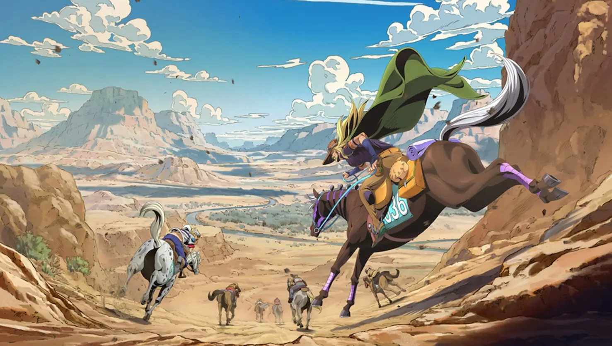
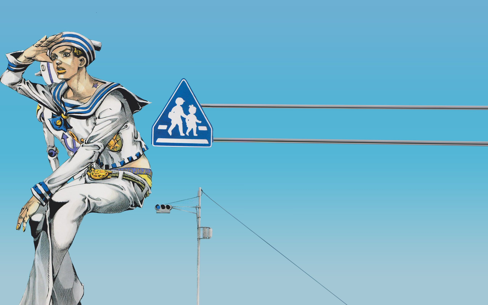
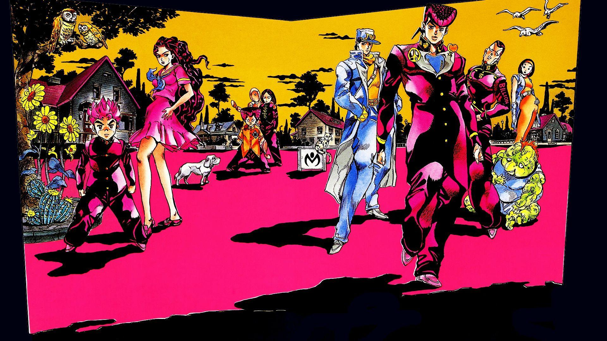

Melhores partes de JOJO
Minha lista das 3 melhores partes do anime/manga Jojo
"Esta história narra o meu início de jornada de vida. Não no sentido físico... mas no sentido da adolescência até a idade adulta..."
Partes
Todas as partes
- JOJO: Phantom Blood
- JOJO: Battle Tendency
- JOJO: Stardust Crusaders
- JOJO: Diamond is Unbreakable
- JOJO: Golden Wind
- JOJO: Stone Ocean
- JOJO: Steel Ball Run
- JOJO: JoJolion
- JOJO: The JOJOLands
Minha top list dos 3 melhores
- JOJO: Steel Ball Run
- JOJO: JoJolion
- JOJO: Diamond is Unbreakable
1. Steel Ball Run 🐎

Steel Ball Run (Parte 7 de JoJo's Bizarre Adventure) é um faroeste de aventura e fantasia ambientado nos EUA em 1890, focando em uma corrida de cavalos transcontinental de 50 milhões de dólares. A trama acompanha o ex-jóquei paraplégico Johnny Joestar e Gyro Zeppeli, explorando temas de superação e o novo "Spin" em um universo reiniciado.
2. Jojolion 🫧

JoJolion (Parte 8) é um mangá de mistério e aventura de Hirohiko Araki, serializado de 2011 a 2021. A trama segue Josuke Higashikata, um amnésico com quatro testículos que busca sua identidade após surgir de um "Muro com Olhos" em uma Morioh pós-terremoto, envolvendo segredos familiares e seres de pedra.
3. Diamond is Unbreakable 💎

Diamond is Unbreakable é a quarta parte de JoJo's Bizarre Adventure, ambientada em 1999 na cidade fictícia de Morioh. A história acompanha Josuke Higashikata, filho ilegítimo de Joseph Joestar, que protege sua cidade de usuários de Stand perigosos surgidos após a aparição de um arco e flecha mágico.